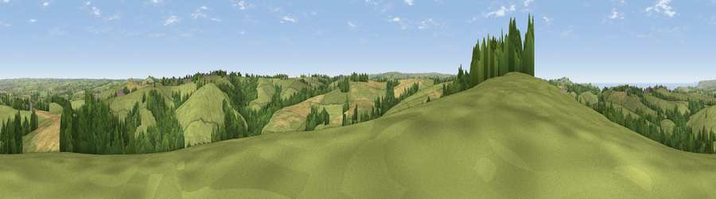

Viewpoint near Week St Mary
#10591 in England · top 24% of its area beats it · near Week St MaryWhere it is
The exact computed spot (SX 21975 97675). Click the marker for map links.
The view, rendered

A 360° render of this exact spot computed from the terrain model, tree cover and land cover — summer colours, afternoon light, calibrated against photographs of famous viewpoints. Real trees, hedges and buildings will differ in detail.
The panorama
Grey silhouette: terrain skyline in each direction (720 bearings, Earth curvature and refraction included). Dashed green: skyline with trees (+15 m) and buildings (+8 m) as obstacles. Blue strip: how far the ground is visible on each bearing.
Where the view opens
Wedge length = distance to the farthest visible ground on that bearing (vegetation-aware). Rings at 10, 25 and 50 km.
What fills the view
70% grassland · 16% woodland · 11% cropland · 2% water ·
Angular shares of the visible panorama (visual magnitude), not map area. Landscape diversity 0.38 (0–1 Shannon).
Key numbers
More beautiful places nearby
The staircase of upgrades: each row has a higher view potential than everything closer. Driving times are estimates from straight-line distance, calibrated against real road routing — check an actual route before setting out.
| Place | Direction | Drive | Score |
|---|---|---|---|
| Viewpoint near Week St Mary | ENE · 2 km | ~4 min | 67.7 |
| Viewpoint near Poundstock | NW · 4 km | ~9 min | 70.0 |
| Viewpoint near Poundstock | NW · 4 km | ~9 min | 76.0 |
| Viewpoint near Poundstock | WNW · 4 km | ~10 min | 79.7 |
| Viewpoint near Crackington Haven | WNW · 5 km | ~12 min | 81.8 |
| Viewpoint near Crackington Haven | WSW · 10 km | ~19 min | 88.1 |
| Viewpoint near Combe Martin | NE · 63 km | ~85 min | 88.9 |
| Holdstone Hill | NE · 64 km | ~87 min | 90.2 |
50.75131, -4.52505 · source: screening · position refined by local search. Computed location — check access rights before visiting.